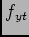
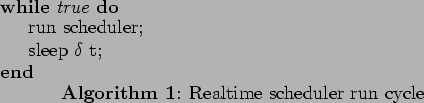
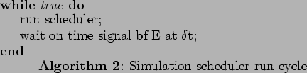
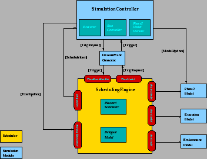

Here I discuss the additional comonents required to implement a simulation framework with which to test various schedulers. Need to mention simple model used with basic DS and short LAS but additional complexity when scheduler runs in parallel with executor but with realtime running costs.
Need a framework to run the scheduler in. Currently looking at running scheduling engine continuously at some predefined rate with additional planning layers running at slower rate - how the Scheduler's run-rate (better name?) is chosen is dependant on the rate at which the ODB changes - if we run every 30 minutes and ODB changes significantly on that timescale we will either miss opportunities or do unnecessary (unprofitable) work - both lead to reduced cumulative reward. Consequently the need for some sort of feedback from the ODB (Phase2Model) may be needed - suggests some sort of Phase2ModelUpdateListener interface that the SE can register as. This would most likely just have a simple implementation like a method phase2ModelUpdated(Phase2Event pe).
How do we decide when a significant change has occurred ? - Suggest each event type has some sort of weighting associated and we just increment a score as the events come in - maybe need to consider if the event's target is involved in the current schedule as part of the assessment. When a threshhold is exceeded this could prompt a rerun of the scheduler. We dont want the scheduler re-running each time an ODB change occurs - this will lead to reduced effective horizon and reduced profit. Opportunity here for some learning - i.e. measure the rate of change of the ODB and set the scheduler run rate dependant on this - adaptive run rate (better acronym please).
Because the (simulation) scheduler will be running faster than realtime (i.e. it will execute in realtime but gaps will be speeded up) and the executor (simulator) will also be running (in parallel) in model-time we need some way to synchronize the two - this suggests the need for a discrete event queue to control the model clock (i.e. DiscreteEventSimulationTimeModel. This had not previously been considered neccessary as the scheduler was expected to run on request from the Executor. This turns out to be a bit of a bugger to implement - not difficult for a simulated SE and Executor but I am exepecting to use the real SE here. I would expect to have it run using some sort of polling loop i.e. something like:-

To allow the real SE to be used in simulation, in addition to being able to switch the TimeModel from RealTimeModel to SimulatedTimeModel which can be set by the franework, it will be neccessary to privide simulated clock to inject events/triggers into the SE. I envisage something like:-

To implement the line wait on time signal E at t, The event/trigger E - some class implementing EventObject is something the scheduler would register with an EventGenerator using the registerEvent(Event e, EventHandler h, long deltaTime. In this case the EventHandler is some object the SE would nominate to handle the return event from the EventGenerator T later. The SE would at this point do a wait on the handler. On completion of the wait, the SE continues execution - in effect this is just a round-about way of doing a sleep. Could allow various types of event and SE (or any other type of handler) could act on these appropriately but this is not really neccessary. The simulation framework would also need to make use of the EventGenerator to register execution times of groups effectively being submitted to executor.
Whats going on here ? The sim controller provides all the models for the SE - The EnvModel is likely generated on-the-fly based on current time and some provided function (or e.g. random variation about some mean level or with some trend...). The ExecModel likely uses a random variation
Some details about a test of different bias functions. Effect of snapshot age on calculations - especially wrt (Problem Quality Metrics) PQMs.
What are the effects of various simulation assumptions ? Namely effects like phase2 drift. I will run a series of experments to test the effect of length of lookahead - this can be done using the following method:- work out demand profile d(t) for N nights ahead. Run simulation for 1 night and recalculate - now for N-1 nights ahead, keep doing this so on step r we simulate night r and work out d(t) for N-r nights ahead. Variation on this could include the effects of varying the Env model. Basically I just want to know if look ahead calculation of D(t) works - can also compare this to working out D(t) for r using different ODB snapshots.
This was the FWDDMD set of results - add graphs here XXX. Notes: ODB snapshot 31oct07, run for 3x days ahead. Using scoring model  - need to get from standard SCO model table in scoremodel section